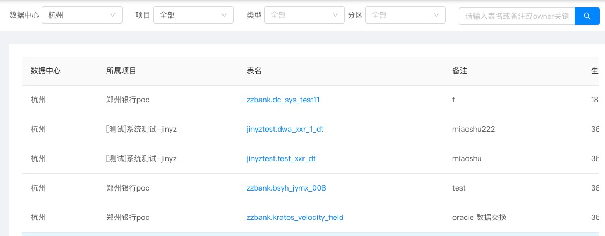
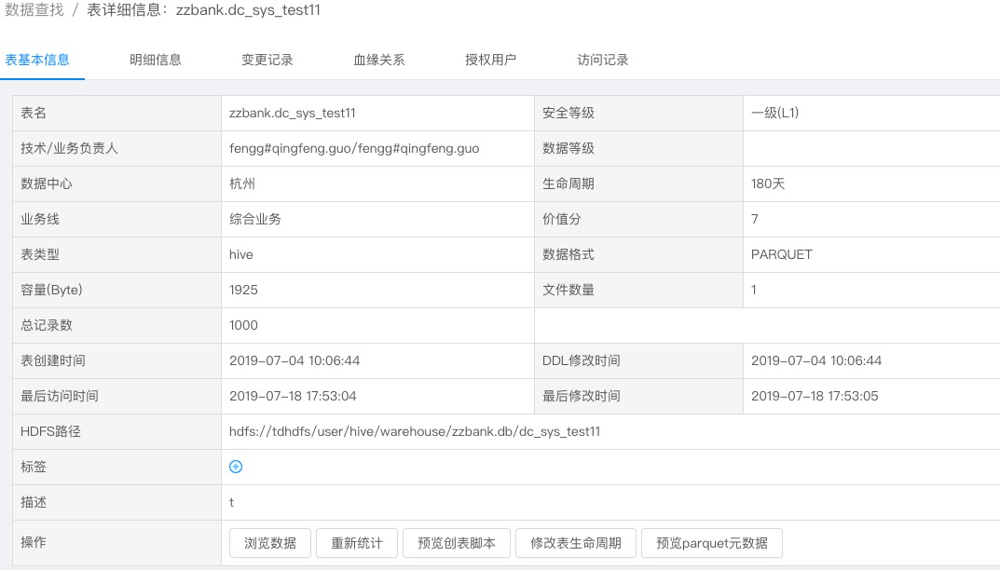
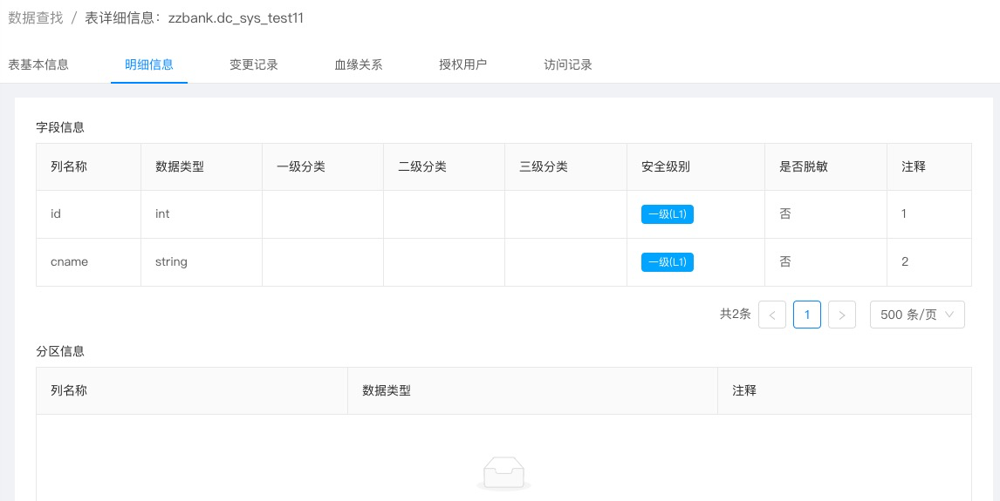
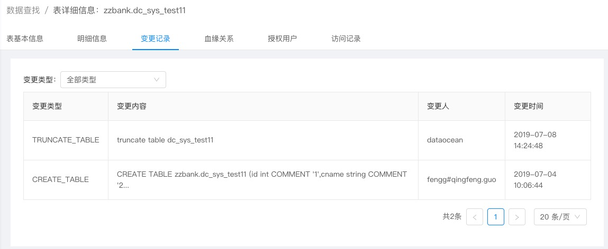
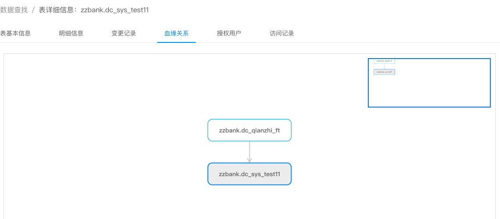

数据查找
数据查找是非常重要的功能。
其中包括6个模块，分别是表基本信息，明细信息，变更记录，血缘关系，授权用户和访问记录。
3.3.2.1 表信息展示
首先是表信息的展示，可以选取数据中心、项目、类型、分区和表名作为条件来搜索表。
搜索成功后将在下面界面展示，如图所示。

3.3.2.2 表信息展示
点击具体的表名，就可以进入表的详细信息界面。
首先介绍表信息展示。

展示的内容包括表的一些基本信息。除此之外，可以看到下面有5个标签，浏览数据，重新统计，浏览创表脚本，修改表生命周期和预览parquet元数据。
3.3.2.3 明细信息
明细信息中包含了表的所有列的信息，以及分区列的信息。

3.3.2.4 变更记录
变更记录界面展示了表的历史变更记录，可以通过下拉框选取类型过滤。

3.3.2.4 血缘关系
血缘关系展示了表之间的关联,例如某张表的数据是来自另外某张表的。

3.3.2.5 产出信息(分区表)
产出信息是分区表特有的标签，其中包括刷新分区，重新计算分区，删除分区和合并分区。
其中合并分区可以将多个分区(文件数>1)的分区的小文件合并,可以指定合并后分区的文件个数
 合并后的文件数
合并后的文件数

运行的任务可以在运维中心-作业监控里看到。